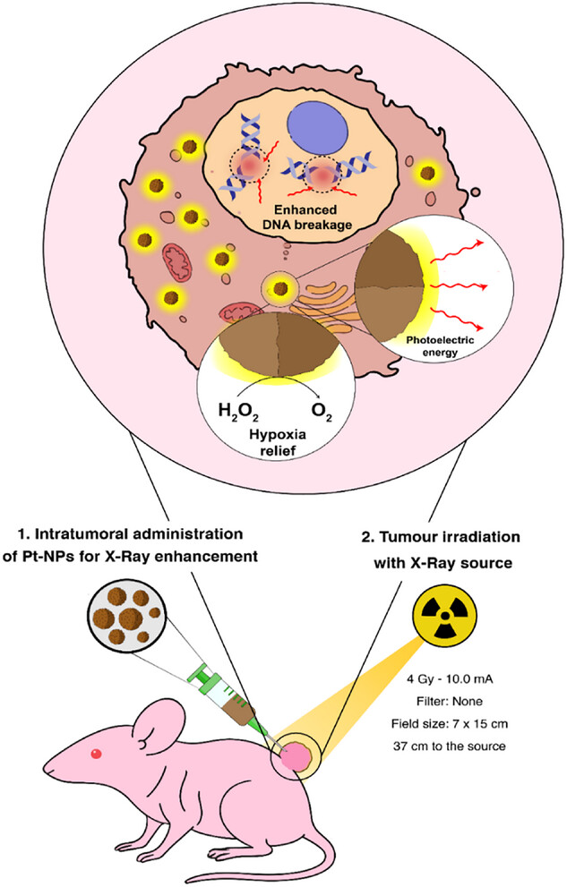

Project Summary
One of the most important projects of my Ph.D. thesis was the implementation of an inorganic nanomaterial, based on copper and iron, for its use as antitumoral therapy. This work was performed alongside my coworker, who was responsible of the chemical synthesis and characterization of the nanomaterial. Overall, this work was developed from the full synthesis of the nanomaterial to its administration to laboratory animals as an anitumotal therapy. In particular, the series of experiments that I conducted allowed us to gain the following insights: - The catalytic action of our nanoparticle depleted a key molecule for the tumoral cell metabolism: glutathione, which is the most powerful antioxidant of the cells. - Our nanomaterial showed stronger toxicity in tumoral cells than in healthy cells, being able to eliminate tumoral cells through two different metabolic pathways. - Laboratory animals that were locally treated with repeated injections of our nanomaterials showed reducted tumoral growth rate and a significant reduction of the tumoral volume. This collaborative work allowed me to strenghten some attitudes such as teamwork with an interdisciplinary team, results presentation, data treatment, paying attention to details, and evidence-based problem solving. Moreover, the results of this project led to the publication of several articles in Q1 journals, generating extremely relevant scientific insights:
Graphical abstract
